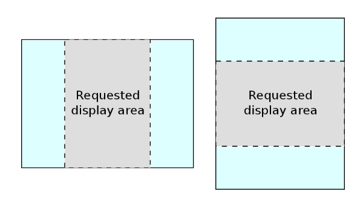

JMapPane canvas class¶
JMapPane is a spatially-aware canvas component derived from Swing’s JPanel class. It works with the GeoTools rendering system to display features. The following snippet shows a typical way of setting up a JMapPane:
// Create a MapContent instance and add one or more layers to it
MapContent map = new MapContent();
...
// Create a renderer which will draw the features
GTRenderer renderer = new StreamingRenderer();
// Create the map pane to work with this renderer and map content.
// When first shown on screen it will display the layers.
JMapPane mapPane = new JMapPane(renderer, map);
You can also set, or even replace, the renderer and/or map content objects of an existing map pane:
JMapPane mapPane = new JMapPane();
mapPane.setRenderer( new StreamingRenderer() );
mapPane.setMapContent( myMap );
Display area and map scale¶
By default, JMapPane displays the full extent of layers in the associated MapContent when it is first shown on screen. You can set a specific area to display, in world coordinates, before and/or after showing the pane:
// Set an area of the map to display. This will cause the map pane
// to repaint.
ReferencedEnvelope bounds = new ReferencedEnvelope(minX, maxX, minY, maxY, crs);
mapPane.setDisplayArea( bounds );
You can query the current area displayed:
ReferencedEnvelope currentArea = mapPane.getDisplayArea();
How map position and scale are calculated¶
JMapPane uses MapViewport for display area calculations. When you specify an area to display, in world coordinates, the area is first centred in the map pane and then, if necessary, it is made either taller or wider to match the aspect ratio (width to height) of the pane’s screen area as illustrated below. For this reason, the envelope returned by the getDisplayArea method will generally be larger than one previously passed to setDisplayArea.
When the pane is resized on screen, the scale of the map and its position relative to the pane remain constant.
Internally, world (map) coordinates are related to screen (pixel) coordinates with AffineTransforms (see the AffineTransform tutorial for an introduction). You can access the transforms directly via the getWorldToScreen() and getScreenToWorld() methods. This can be useful if you wish to draw on top of the map pane or calculate the current map scale:
// Find the current map scale (map unit to screen pixel)
AffineTransform tr = mapPane.getWorldToScreenTransform();
double scale = tr.getScaleX();
// Note: tr.getScaleY() would return the same value
Handling mouse events¶
The swing module provides spatially-aware mouse event and listener classes which you can use to track the position of the mouse cursor in both screen and world coordinates. To listen to map pane mouse events, implement the MapMouseListener interface or, for simple cases, extend the MapMouseAdapter class which has empty implementations of all of the inteface methods. A listening object receives MapMouseEvents which extend Swing’s standard MouseEvent class to add world position data.
This example prints the world position of mouse clicks to the console as well as notifying when the mouse enters or exits the map pane.
myMapPane.addMouseListener(new MapMouseAdapter() {
@Override
public void onMouseClicked(MapMouseEvent ev) {
// print the screen and world position of the mouse
System.out.println("mouse click at");
System.out.printf(" screen: x=%d y=%d \n", ev.getX(), ev.getY());
DirectPosition2D pos = ev.getWorldPos();
System.out.printf(" world: x=%.2f y=%.2f \n", pos.x, pos.y);
}
@Override
public void onMouseEntered(MapMouseEvent ev) {
System.out.println("mouse entered map pane");
}
@Override
public void onMouseExited(MapMouseEvent ev) {
System.out.println("mouse left map pane");
}
});
Linking to Action classes for interactive use¶
The swing module includes a small selection of Action classes that make it easy to create toobar buttons or other controls for zooming, panning and resetting the map display.
For example, this code creates two toolbar buttons to zoom in and out:
toolBar = new JToolBar();
toolBar.setOrientation(JToolBar.HORIZONTAL);
toolBar.setFloatable(false);
ButtonGroup cursorToolGrp = new ButtonGroup();
JButton zoomInBtn = new JButton(new ZoomInAction(mapPane));
toolBar.add(zoomInBtn);
cursorToolGrp.add(zoomInBtn);
JButton zoomOutBtn = new JButton(new ZoomOutAction(mapPane));
toolBar.add(zoomOutBtn);
cursorToolGrp.add(zoomOutBtn);
The zoom Action classes in the code above are each associated with a map pane CursorTool class (e.g. ZoomInTool) which handles setting the cursor and responding to mouse actions. You can use these tool and Action classes as the starting point for your own specialized controls.
Example¶
You will need to define your own MapContent (defining what layers to display) prior to using a JMapPane:
private static void showMap(MapContent map) throws IOException { final JMapPane mapPane = new JMapPane(new StreamingRenderer(), map); mapPane.setMapArea(map.getLayerBounds()); JFrame frame = new JFrame("ImageLab2"); frame.setLayout(new BorderLayout()); frame.add(mapPane, BorderLayout.CENTER); JPanel buttons = new JPanel(); JButton zoomInButton = new JButton("Zoom In"); zoomInButton.addActionListener(new ActionListener() { public void actionPerformed(ActionEvent e) { mapPane.setState(JMapPane.ZoomIn); } }); buttons.add(zoomInButton); JButton zoomOutButton = new JButton("Zoom Out"); zoomOutButton.addActionListener(new ActionListener() { public void actionPerformed(ActionEvent e) { mapPane.setState(JMapPane.ZoomOut); } }); buttons.add(zoomOutButton); JButton panButton = new JButton("Move"); panButton.addActionListener(new ActionListener() { public void actionPerformed(ActionEvent e) { mapPane.setState(JMapPane.Pan); } }); buttons.add(panButton); frame.add(buttons, BorderLayout.NORTH); frame.setDefaultCloseOperation(WindowConstants.EXIT_ON_CLOSE); frame.setSize(600, 400); frame.setVisible(true); }
Actions¶
The ZoomInAction, ZoomOutAction, PanAction actions used in the above example shows changing the map “state” (the state of the map controls what it does in response to mouse clicks).
You will find ready to go actions that also change the map state:
JMapPane mapPane = ...
JButton zoomInButton = new JButton(new ZoomInAction(mapPane));
JButton zoomOutButton = new JButton(new ZoomOutAction(mapPane));
JButton panButton = new JButton(new PanAction(mapPane));
Mouse Wheel
From email - Perhaps the easiest way of doing it, without sub-classing JMapPane, is something like this:
// somewhere in your code... double clickToZoom = 0.1; // 1 wheel click is 10% zoom // wheel event handler public void handleMouseWheelEvent(MouseWheelEvent ev) { int clicks = ev.getWheelRotation(); // -ve means wheel moved up, +ve means down int sign = (clicks < 0 ? -1 : 1); Envelope env = mapPane.getDisplayArea(); double width = env.getWidth(); double delta = width * clickToZoom * sign; env.expandBy(delta); mapPane.setDisplayArea(env); mapPane.repaint(); }I imagine we can set up a “tool” to respect mousewheel events; perhaps you would like to submit a patch?